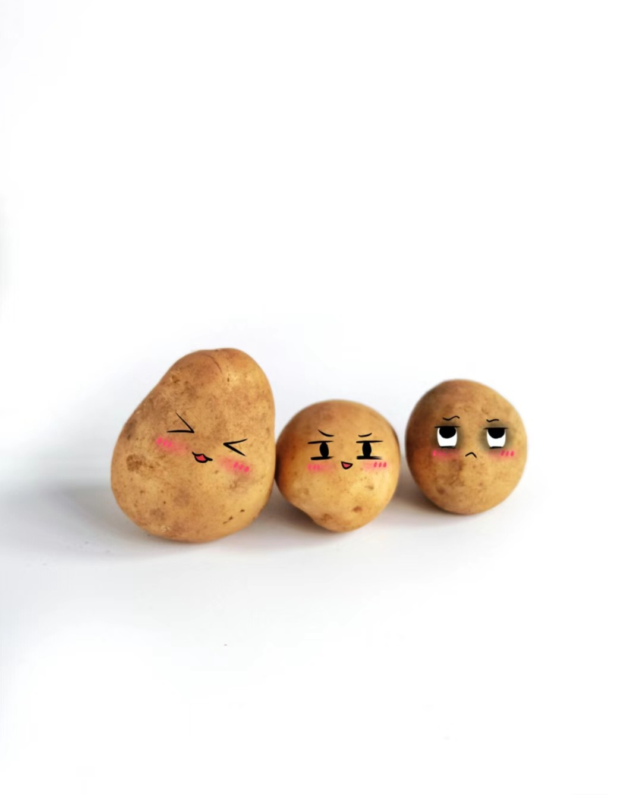
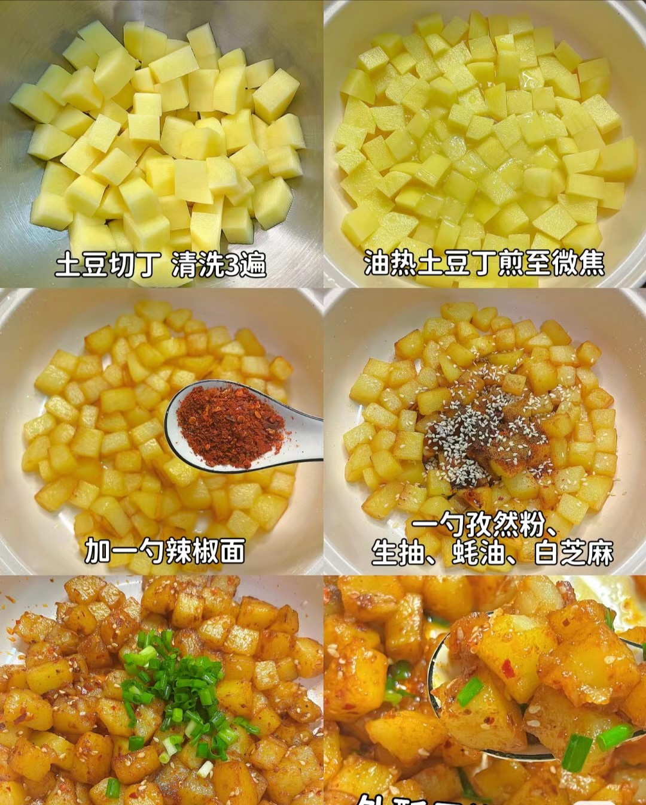
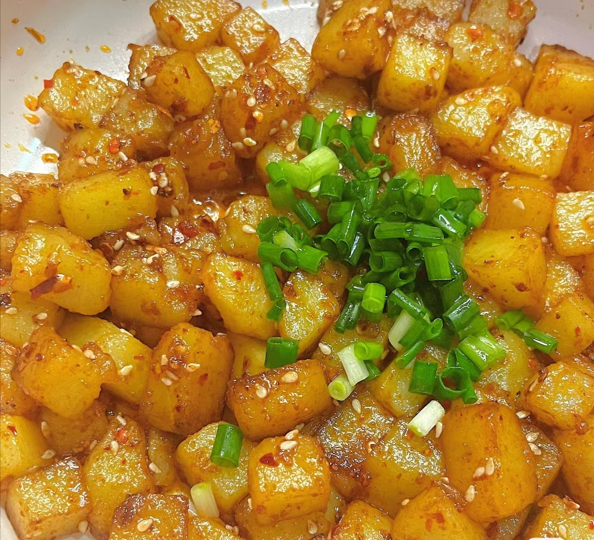

1.备好材料:可以有鹌鹑蛋大小的小土豆最好了，没有的话就用大土豆切成小土豆，洗净去皮备用

2.适量油，油热放土豆煎至微黄，最好是表面形成脆皮（新手建议将准备好的土豆煮熟后去水再下油煎脆皮）加入一勺辣椒面、一勺孜然粉、生抽、耗油、白芝麻，搅拌均匀，最后撒上一把葱花，出锅
做菜可不仅可以陶冶自己的情操，还可以帮助家庭和睦，一边一起做菜一边聊天，既增加了家人之间的感情，又减少了家务琐事带来的烦恼，人重要的就是摆正自己的心态，每当一道菜做出来的时候，心里想：看看我自己真能干吧，用欣赏的眼光去对待爱人的懒惰，毕竟再好的厨师最后的结果都是让别人分享自己劳动的成果，正如我们刚整理完家务，孩子就弄得乱七八糟，我们欣赏的是孩子的顽皮和可爱一样，没有乱又那里会有整洁呢？做菜的真谛又何尝不是如此呢？

下一个在这->蒜泥白肉
上一个在这->红烧肉